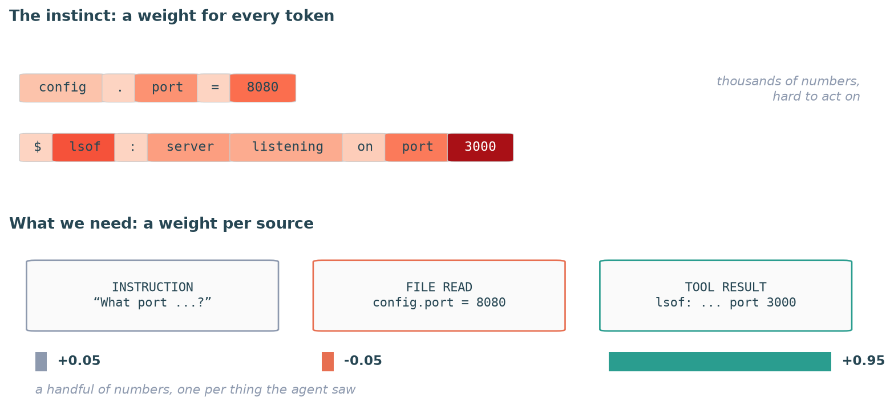
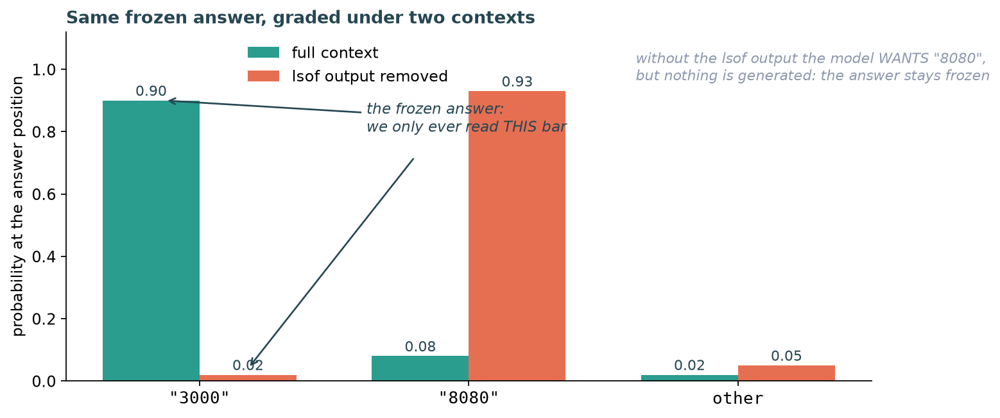
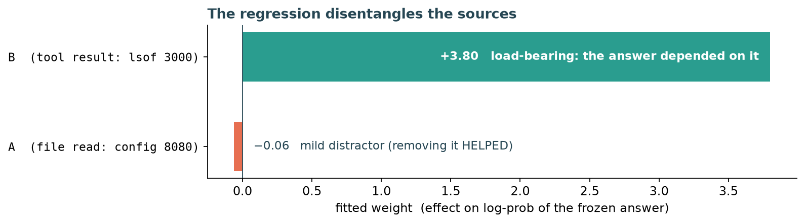

Part of the Agent Comprehension Instruments series.
Your coding agent just read twelve files, ran three shell commands, and confidently told you the server config is wrong. Which of those twelve files did it actually use to reach that conclusion? Did the lsof output matter? Did it ignore the config file it so dutifully opened?
You can’t just ask it; models confabulate justifications. Attention maps feel like the answer but are famously unreliable as explanations. And yet there’s a method that answers this question with nothing but forward passes and a linear regression, and it’s one of the most elegant tricks I’ve seen in the LLM tooling space. It’s called ablation attribution, published as ContextCite by Cohen-Wang et al. (NeurIPS 2024).
This post builds it from scratch, following the exact path of confusions I went through when learning it. If you make it to the end, you’ll also know precisely what the method cannot tell you, which is where it gets scientifically interesting.
The Wrong First Instinct
If you come from classical ML, “attribute the output to the input” sounds like a saliency map: for every output token, a heat map over input tokens. Something SHAP-shaped.
That instinct is half right (this method is a cousin of SHAP), but it needs two corrections, and the second one is the whole trick.
Correction 1: attribute to sources, not tokens. We don’t care whether input token 4,812 mattered. We care whether the config file mattered, whether the lsof output mattered. So the context gets partitioned into a handful of sources: one file read, one tool result, one instruction block. A real agent trajectory has maybe 5 to 50 sources, not 30,000 tokens. Keep that number in mind; it’s what makes everything affordable.

A saliency map (top) assigns an importance weight to every input token; useful for models, overwhelming for humans. We want the bottom picture: one signed weight per source the agent saw. (Numbers illustrative.)Correction 2: never attribute the generation. Attribute the score of the frozen generation. This one deserves its own section.
The Move That Makes It Work
Here’s the problem correction 2 solves. An LLM’s output is sampled: run it twice and you may get different answers. “How much did source B influence the output” is ill-defined when the output itself is a dice roll.
The fix: the agent generates its answer exactly once, the real run, and we save the answer’s exact tokens. From then on we never generate again. Instead we use the model’s other mode:
- Generate: “here’s a prompt, produce an answer.” Sampled, slow, one token at a time.
- Grade: “here’s a prompt and a finished answer; tell me, token by token, how probable you would have found each of these exact tokens.” Deterministic. No sampling happens at all.
Grading gives us a single number for any (context, frozen answer) pair:
Read it as: how confident is the model in this specific answer, given this specific context. (Natural log throughout, the ML convention; if you recompute these with you’ll get numbers about 2.3x smaller.)
Why grading is cheap: prefill vs decode
Generation is expensive because it’s sequential: one forward pass per new token, and each pass streams all the model’s weights to produce a single token. Grading has no unknowns; the full sequence (context + frozen answer) goes through in one parallel forward pass, and the causal attention mask guarantees each position is scored using only the tokens before it. The language-model head fires at every position simultaneously. If this feels like a trick, it’s literally how models are trained: a training step computes the loss over a known text in one pass, and nobody “rolls out” during training. Grading is a training step without the weight update. A 500-token answer costs 500 tokens of prefill, not 500 sequential steps.
So we’ve turned a stochastic generator into a deterministic function: feed it any modified context plus the frozen answer, get back one score.
Now we can do experiments on that function.
A Toy Example You Can Hold in Your Head
The agent’s context ended up with an instruction and two sources, and it answered once, for real:
[INSTRUCTION] "What port is the server on? Reply with just the number."
[SOURCE A] file read: "config.port = 8080"
[SOURCE B] tool result: "$ lsof: server listening on port 3000"
Frozen answer: "3000"Grading pass 1, full context. Glue the frozen answer onto the context, one forward pass, read the probability at the answer position:
softmax: { "3000": 0.90, "8080": 0.08, other: 0.02 }
score = ln(0.90) ≈ −0.11Now ablate B. “Ablating” is physically dumb: delete B’s tokens from the input. The prompt is just shorter now. Grade the same frozen answer:
softmax: { "3000": 0.02, "8080": 0.93, other: 0.05 }
score = ln(0.02) ≈ −3.9Stare at this for a second, because it’s the crux. Without the lsof output, the model wants to say “8080” (93%!). But we never let it say anything. We only read off how much probability it still assigns to the frozen “3000”: a miserable 2%. The model is telling us, in one number: without that tool result, I would not have said what I said.

Grading, not generating: the softmax at the answer position under both contexts. The red “8080” bar is what the model would rather say; we never let it. Only the “3000” bars are ever read.Ablate A instead:
softmax: { "3000": 0.95, "8080": 0.01, other: 0.04 }
score ≈ −0.05 (slightly BETTER than with the full context)Interesting: removing the config file made the model more confident. The 8080 file was a distractor.
From Ablations to Attributions
Collect the experiments into a table: which sources were kept, and what score came out.
| kept A? | kept B? | score |
|---|---|---|
| 1 | 1 | −0.11 |
| 1 | 0 | −3.90 |
| 0 | 1 | −0.05 |
| 0 | 0 | −3.84 |
Now fit a linear regression: . Out come the attributions: (the answer depended on the lsof output) and (the config file was mildly hurting). Check it against the table: moving B from 0 to 1 lifts the score by ~3.79 whether A is present or not, and moving A from 0 to 1 costs ~0.06 either way. The weights are signed, and negative weights are real findings: a source that actively pushed against the answer.

There’s an elegant reading hiding here: the weights are additive in log space, which means each kept source multiplies the answer’s probability by its own factor . Independent multiplicative contributions; a natural grammar for probabilities.
And notice what the regression is doing for us conceptually: a single ablation row only tells you about that particular combination of sources. The regression across many random combinations is what disentangles each source’s individual share. The linear model isn’t the idea; it’s the computational aid that turns mixed evidence into per-source numbers.
”But That’s Forward Passes!”
With sources there are possible subsets. For 30 sources, a billion. Enumerating them is hopeless, and here’s where the method earns its keep.
You don’t need the exact ablation function. You need regression coefficients. And fitting unknowns needs on the order of equations, not , for the same reason fitting a plane doesn’t require measuring every point in space:
- Unknowns grow linearly with .
- Subsets grow exponentially with .
So: sample ~64 random keep/drop masks (each source kept with probability ½), grade each one (64 forward passes), fit the regression. For 30 sources you visit 64 corners of a billion-corner hypercube and let linearity carry you everywhere else. The paper adds one more refinement: fit with Lasso, betting that attributions are sparse (only a handful of sources genuinely matter), which drives the sample count down further. On a single consumer GPU with a 7B model, the whole thing costs a few minutes per answer.
The Honesty Mechanism
At this point you should be suspicious. A linear surrogate of a transformer? Extrapolated from 64 samples to a billion subsets?
The method’s best idea is that it doesn’t ask you to believe this. It checks it, per answer. Hold a slice of the sampled masks out of the fit. Ask the fitted line to predict the scores of those held-out ablations. Compare predictions to reality with a rank correlation. This is called the LDS (linear datamodeling score): high LDS means the linear story genuinely predicts what removing things does for this specific answer, so the weights mean something; low LDS means the fit is fiction here, discard it.
Proof is replaced by a per-use validity check. That’s the right epistemics for a method built on an approximation.
Where linearity genuinely breaks
Suppose sources B and C carry the same fact (a file read twice, a tool result quoting the file). Drop either alone: nothing happens. Drop both: the score craters. That’s an OR, an interaction term, and a linear model structurally cannot represent it at any sample size; more samples reduce variance, never wrongness of the model class. Redundancy is the known hard case (the authors document it), and the subtle danger is that LDS can look fine while redundant sources quietly split or hide their credit. If your contexts are redundancy-heavy, budget extra skepticism (and targeted pair-drop experiments).
What It Can Never Tell You
One more limit, and it’s the one worth internalizing before you quote these numbers anywhere.
We measured : the model’s confidence in “3000” craters without the lsof output. Does that tell you what the agent would have done without B?
No. And it can’t, structurally. The method only ever grades the answer that actually happened. It knows that answer becomes unlikely without B; it cannot know what would have replaced it. Maybe a paraphrase (“the server is on port 3000”), in which case the behavior didn’t depend on B at all, only the exact wording did. Maybe a completely different action. Distinguishing those requires actually generating under the ablated context, a rollout, which is a different (and more expensive) instrument with different validity problems.
So read the weights as: this source supported the answer as produced. Reliance, not counterfactual behavior. The method also can’t see sources whose influence was suppressing something the model never wrote; grading the produced answer is blind to the unproduced.
Why I’m Excited Anyway
Within its scope, this is a remarkable deal: a behaviorally grounded, causally flavored, per-answer-validated attribution for the price of ~64 prefill passes and a Lasso fit. No white-box access needed beyond logprobs. No trusting attention maps. A built-in gate that refuses to hand you numbers when its own assumption fails.
We’re using it to study a question anyone building agents eventually faces: when an agent accumulates a long working context (files read, tool outputs, its own notes), how much of that context does it actually use? The instrument above is the foundation; the interesting science starts when the numbers come back.
If you want to go deeper: the paper is ContextCite: Attributing Model Generation to Context (Cohen-Wang, Shah, Georgiev, Madry; NeurIPS 2024), and the reference implementation is at MadryLab/context-cite. The four documented failure modes in their Appendix C.4 are worth your time; knowing where a tool breaks is half of owning it.